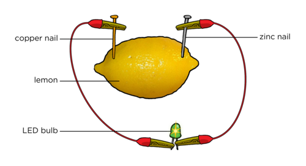
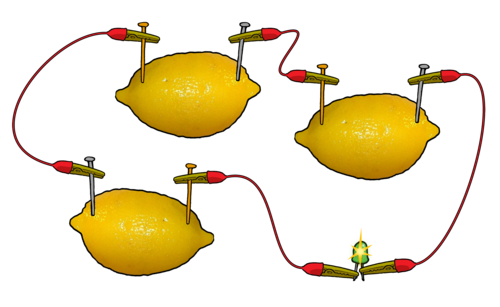
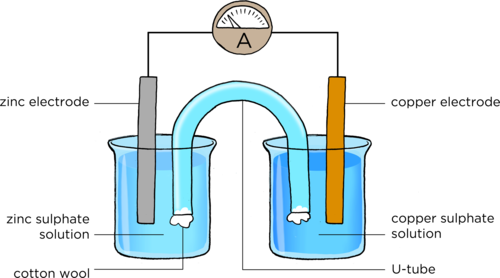
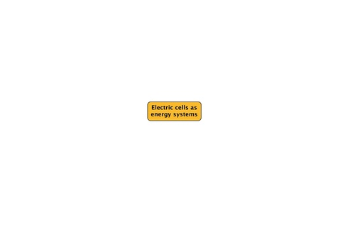
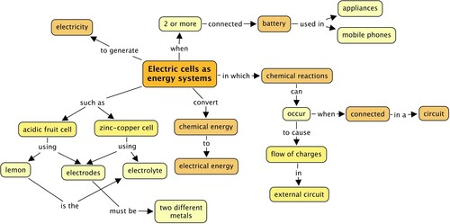

<div class="container energyandchange"><div id="contents" class="col-md-12 main-content"><span class="ch-nr-2"/>
        <div class="section"><h1 class="title" id="toc-id-0">Electric cells as energy systems</h1><div class="teachers-guide">
<p/>

<p><strong>Chapter overview</strong></p>

<p>0.5 weeks</p>

<p>This is a very short chapter with only 1.5 hours of teaching time allocated to it. We revisit the idea of a system and energy transfers within a system focusing on electric cells. The concept of a system, looking at potential and kinetic energy and conservation of energy within a system, was first introduced in Gr 7 Energy and Change. In Gr 8 Energy and Change, learners would have also looked at energy transfers within an electrical system. The focus of this chapter however, is on electric cells.</p>

<p>We will start off by looking at a simple electric cell made using an acidic fruit to explain what happens within a cell in an electric cell, and then we will make a more complex electric cell using copper and zinc plates as electrodes. It is important to make the distinction between a cell and a battery as these words are often used interchangeably. A battery is two or more cells that are connected together.</p>

<p>2.1 Electric cells (1.5 hours)</p>
<table><tr><td><p><strong>Tasks</strong></p></td><td><p><strong>Skills</strong></p></td><td><p><strong>Recommendation</strong></p></td></tr><tr><td><p>Activity: Fruit cell</p></td><td><p>Following instructions, observing, analysing, explaining</p></td><td><p>CAPS suggested</p></td></tr><tr><td><p>Activity: Zinc-copper cell</p></td><td><p>Following instructions, observing, taking measurements, analysing, explaining</p></td><td><p>CAPS suggested</p></td></tr></table><p/>
</div><div class="note col-md-10" data-type="keyquestions"><ul data-class="ListBulleted"><li>Where does an electric circuit get its energy from?</li>
<li>What is inside a battery?</li>
<li>How can we build our own electric cells?</li>
<li>How does an electric cell supply energy?</li>
</ul></div>
<p>This term we will be investigating electricity and electric circuits in more detail. We are going to pay attention to electric cells. You have already come across electric cells in previous grades when looking at electric circuits. What is the circuit symbol for an electric cell? Draw it in the space below. Indicate the positive and negative terminal.</p>

<p><br/><br/><br/></p>
<div class="teachers-guide">
<p/>

<p>The symbol for an electric cell:</p>
<figure id="gd-idm4579184"></figure><p/>
</div><div class="section"><h2 class="title" id="toc-id-1">Electric cells</h2><div class="note col-md-6" data-type="newwords"><ul data-class="ListBulleted"><li>electric cell</li>
<li>battery</li>
<li>electrode</li>
<li>electrolyte</li>
<li>half cell</li>
<li>salt bridge</li>
</ul></div>
<p>What is the source of energy in an electric circuit?</p>

<p/><hr/><div class="teachers-guide">
<p/>

<p>An electric cell.</p>

<p/>
</div>
<p>We use electric cells to supply the energy needed for electrons to move around an electric circuit. We often talk about batteries in electric circuits or appliances. A battery is a group of two or more electric cells that are connected together. Where does the energy in a cell come from?</p>

<p>In Gr 8 we spoke about the transfer of energy within electrical systems. We can also call an electric cell a system. Write your own definition of a system below.</p>

<p/><hr/><hr/><div class="teachers-guide">
<p/>

<p>A system is a set of parts working together as a whole.</p>

<p/>
</div>
<p>The electric cell system works to generate electricity. We have spoken before about how electricity is generated using moving parts, such as in a power station where the moving parts in a generator produce electricity. A cell does not have moving parts to generate electricity. An electric cell generates electricity from <strong>chemical reactions</strong>.</p>
<div class="note col-md-6" data-type="takenote">
<p>Last term in Matter and Materials we looked at many different types of chemical reactions.</p>
</div>
<p>Did you know that we can create our own cell using a fruit? Let's try this out in the next activity.</p>
<div class="activity" data-type="Activity"><h1 class="title">Fruit cell</h1><div class="teachers-guide">
<p/>

<p>The citric acid in the lemon acts as an electrolyte. When two different metal electrodes are placed into the acidic lemon solution, and the circuit is closed, electrons flow from the one electrode to the other. This flow of electrons is called electric current.</p>

<p>This is a fun activity for the learners and easily accessible if you do not have the equipment to make the zinc/copper cell in the next activity.</p>

<p/>
</div>
<p><strong>MATERIALS:</strong></p>
<ul data-class="ListBulleted"><li>lemon (or potato)</li>
<li>zinc strip or galvanised nail</li>
<li>copper strip or coin</li>
<li>LED bulb</li>
<li>ammeter</li>
<li>insulated copper conducting wires</li>
</ul><div class="note col-md-6" data-type="visit">
<p>Watch this video to understand how a lemon battery works.<iframe width="420" height="315" src="http://www.youtube.com/embed/GhbuhT1GDpI"></iframe></p>
</div><div class="teachers-guide">
<p/>

<p>The ammeter is optional. You can use the LED light instead of an ammeter to indicate that current is present. However, depending on the fruit that you use, the current might not be strong enough to make the LED light glow, and therefore an ammeter is a more sensitive measure of whether there is current. Connect several of the learner's fruit cells in series until the LED bulb lights up. Note that incandescent light bulbs from torches are not used as the lemon battery will not produce a high enough potential difference to light them up. Instead of a copper nail or copper strip, you can also use a copper coin or piece of copper wire. Instead of a zinc nail, you can also use a steel or iron nail. It is important to highlight to learners that TWO different conductors/metals must be used in the cell. If two of the same metals are used, a potential difference is not created, and the electrons will not flow. As an extension, you can also use different types of fruit to see which ones produce the best cells.</p>

<p/>
</div>
<p><strong>INSTRUCTIONS:</strong></p>
<div class="exercises"><div class="problemset"><div class="entry"><div class="problem">Gently squeeze the lemon to soften the fruit so that the juice is released inside. Be careful not to  crush the lemon or break the peel. If you are using a potato, you do not need to squeeze it first.</div><div class="solution">
<p/><p/>

        
<p/>
</div></div><div class="entry"><div class="problem">
<p>Next, puncture the peel of the lemon with the two different nails (or strips) of <strong>different</strong> metals. If you are using a copper coin, then push it carefully into the lemon so that it breaks the skin.</p>
</div><div class="solution">
<p/><p/>

        
<p/>
</div></div><div class="entry"><div class="problem">Insert each nail slowly and carefully into either side of the lemon. Push the nails into the lemon so that they almost reach the centre of the lemon, but are not touching.</div><div class="solution">
<p/><p/>

        
<p/>
</div></div><div class="entry"><div class="problem">Attach one wire to the zinc (or iron) nail and the other wire to the copper nail or copper coin.</div><div class="solution">
<p/><p/>

        
<p/>
</div></div><div class="entry"><div class="problem">
<p>Connect the wires to the LED bulb and ammeter if you are using one as shown in the diagram.</p>

        <figure id="gd-idm1005136"></figure><p>What do you notice?</p>

<p/>

<p/><hr/><hr/></div><div class="solution">
<p/><p/>

        
<p>There should be a small reading on the ammeter and the light bulb might glow. The size of the reading will depend on the size of the lemon and the quality of the connections. Make sure that the zinc and copper are not touching each other inside the lemon.</p>

        
<p/>
</div></div><div class="entry"><div class="problem">
<p>If your light bulb does not glow, connect your fruit cell with your partner's cell and reconnect the LED light bulb. Does it glow now? If not, connect several more fruit cells in a series until the LED bulb glows as shown in the diagram.</p>

        <figure id="gd-idp10147744"></figure><p>How many cells did you connect in series to cause the LED to emit light?</p>

<p/>

<p/><hr/></div><div class="solution">
<p/><p/>

        
<p>Learner-dependent answer.</p>

        
<p/>
</div></div><div class="entry"><div class="problem">
          
<p/>

<p>What do we call the cells connected together?</p>

        
<p/><hr/></div><div class="solution">
<p/><p/>

        
<p>A battery.</p>

        
<p/>
</div></div><div class="entry"><div class="problem">
          
<p/>

<p>What happens if you replace the copper nail with another zinc nail, so that you have two electrodes of the <strong>same</strong> metal? Are you able to light up the LED light?</p>

        
<p/><hr/></div><div class="solution">
<p/><p/>

        
<p>No you are not able to light up the LED bulb using two nails of the same type of metal.  If two of the same metals are used, a potential difference is not created, and the electrons will not flow.</p>

        
<p/>
</div></div><div class="entry"><div class="problem">
          
<p/>

<p>Experiment further by investigating the effects of pushing the nails deeper into the lemon and placing them at different positions in the lemon (closer together and further apart). Record some of your observations here.</p>

        
<p/><hr/><hr/><hr/><hr/></div><div class="solution">
<p/><p/>

        
<p>Learners should see that the further the nails are pushed into the lemon, the greater the current. This is because the length of the electrodes exposed to the electrolyte is greater (there is increased surface area in contact with the electrolyte).</p>

        
<p>Placing the nails in different positions also has an effect, as the closer the electrodes are to each other, the less resistance there is, and therefore a greater current.</p>

        
<p>This is a good opportunity to also discuss a fair test as learners must only change one variable at a time.</p>

        
<p>A further extension is to use different electrodes. For example, replace the zinc nail or strip with a magnesium strip. Learners can then observe and compare the ammeter readings and draw further conclusions about how the type of material of the conductor has an effect.</p>

        
<p/>
</div></div></div></div>

<p/>
</div>
<div class="note col-md-6" data-type="didyouknow">
<p>The lemon battery is very similar to the first electrical battery invented by Alessandro Volta in 1800. He used salt water instead of lemon juice.</p>
</div>
<p>In the last activity we created a simple electric battery. A chemical reaction takes place inside the lemon which produces electricity. The components in the lemon battery are very similar to those used in a normal battery. The copper and zinc nails (or stips of metal) are called <strong>electrodes</strong>. The lemon juice acts as the <strong>electrolyte</strong>. Citrus fruits, such as lemons, are acidic, which helps their juice to conduct electricity.</p>
<div class="note col-md-6" data-type="takenote">
<p>An electrolyte is a special type of solution which is able to conduct electricity.</p>
</div>
<p>When the electrodes are connected in a circuit, a chemical reaction takes place within the electrolyte in the lemon which causes electrons to move in the external circuit. This flow of charge is <strong>electric current</strong>. The chemical reaction causes a potential difference which causes the flow of electrons in the external circuit. This will only occur when the cell is connected in a circuit. Think of a normal battery that you might use in a torch. You can store this battery for a long time, and it will not go flat as the chemical reactions only take place when it is connected in a circuit.</p>
<div class="note col-md-6" data-type="takenote">
<p>The batteries that you might be most familiar with are the '1,5 V batteries'. These are actually single cells, and are therefore technically not batteries.</p>
</div><div class="note col-md-6" data-type="visit">
<p>Discover how a car battery works.<iframe width="420" height="315" src="http://www.youtube.com/embed/4IgHj2Uim_0"></iframe></p>
</div>
<p>We are now going to build a more complex cell.</p>
<div class="activity" data-type="Activity"><h1 class="title">Zinc-copper cell</h1>
<p><strong>MATERIALS:</strong></p>
<ul data-class="ListBulleted"><li>two 250 ml beakers</li>
<li>copper sulphate solution</li>
<li>zinc sulphate solution</li>
<li>concentrated sodium sulphate or sodium chloride solution</li>
<li>salt bridge made with a U tube (this can be made from a plastic tube which is bent) or filter paper soaked in the salt bridge solution</li>
<li>cotton wool</li>
<li>copper electrode</li>
<li>zinc electrode</li>
<li>insulated copper connecting wires with crocodile clips</li>
<li>LED bulb</li>
<li>ammeter</li>
</ul><div class="teachers-guide">
<p/>

<p>Prepare 1 M zinc sulphate and 1 M copper sulphate solutions before hand. A 1 molar (M) solution contains 1 mole of solute dissolved in 1 litre of solution:</p>
<ul data-class="ListBulleted"><li>
<p>To make a 1 M solution of copper sulphate, dissolve 250 g of hydrated copper sulphate (CuSO<sub>4</sub>.5H<sub>2</sub>O) in distilled water and then add more water until you have 1 litre.</p>
</li>
<li>
<p>To make a 1 M solution of zinc sulphate, dissolve 288g  of hydrated zinc sulphate (ZnSO<sub>4</sub>.7H<sub>2</sub>O) in distilled water and then add more water until you have 1 litre</p>
</li>
</ul><p>The exact concentration of sodium sulphate or sodium chloride is not too important.</p>

<p>If you have a sensitive measuring balance, measure the mass of the electrodes before the experiment, and then again one day later, to show the change in mass. This will highlight the fact that a chemical reaction has taken place.</p>

<p>If your solutions are concentrated enough, the bulb should glow, otherwise you can also connect more than one cell in series as was done with the lemons.</p>

<p>If you do not have enough materials for each learner to build a cell, you can do this as a demonstration or else set up a couple workstations for a group of learners to observe.</p>

<p/>
</div><div class="note col-md-6" data-type="takenote">
<p>If you do not have a U-tube or plastic tubing, you can use strips of filter paper or a cloth soaked in the sodium sulfate solution with the ends dipped into each beaker.</p>
</div>
<p><strong>INSTRUCTIONS:</strong></p>
<div class="teachers-guide">
<p/>

<p>If you have a sensitive measuring balance, measure the mass of the copper and zinc plates and get learners to record this.</p>

<p/>
</div><div class="exercises"><div class="problemset"><div class="entry"><div class="problem">Pour about 200 ml of the zinc sulphate solution into a beaker and put the zinc electrode into the solution.</div><div class="solution">
<p/><p/>

        
<p/>
</div></div><div class="entry"><div class="problem">Pour about 200 ml of the copper sulphate solution into the second beaker and place the copper electrode into the solution.</div><div class="solution">
<p/><p/>

        
<p/>
</div></div><div class="entry"><div class="problem">Fill the U-tube with the sodium sulphate solution and seal the ends of the tubes with the cotton wool. This will stop the solution from flowing out when the U-tube is turned upside down.</div><div class="solution">
<p/><p/>

        
<p>Learners should fill the salt bridge with the sodium sulphate solution and then plug the ends with cotton wool. Inserting the salt bridge can be a difficult manoeuvre so make sure that they practise it a bit first and use enough cotton wool. If you do not have a U-bend tube then use strips of filter paper or a cloth soaked with saturated sodium sulphate solution.</p>

        
<p/>
</div></div><div class="entry"><div class="problem">
          
<p/>

<p>Connect the zinc and copper electrodes to the ammeter. Does the ammeter record a reading?</p>

        
<p/><hr/></div><div class="solution">
<p/><p/>

        
<p>No, there is no reading on the ammeter.</p>

        
<p/>
</div></div><div class="entry"><div class="problem">
<p>Place the U-tube so that one end is in the copper sulphate solution and the other end is in the zinc sulphate solution, as shown in the diagram.</p>

        <figure id="gd-idm15565648"></figure><p>Is there a reading on the ammeter?</p>
</div><div class="solution">
<p/><p/>

        
<p>Yes, there is a reading on the ammeter.</p>

        
<p/>
</div></div><div class="entry"><div class="problem">Remove the ammeter and insert the LED bulb in the circuit. Does it glow? If not, try connecting a few cells in series until the LED lights up.</div><div class="solution">
<p/><p/>

        
<p/>
</div></div><div class="entry"><div class="problem">Observe what is happening at the copper electrode and at the zinc electrode.</div><div class="solution">
<p/><p/>

        
<p/>
</div></div></div></div>
<div class="note col-md-6" data-type="takenote">
<p>You can also use a voltmeter to measure the potential difference across the cell. The voltmeter will replace the ammeter and LED light.</p>
</div><div class="teachers-guide">
<p/>

<p>If you measured the mass of the electrodes at the beginning of the experiment, take the ammeter away and connect the copper and zinc plates to each other directly using copper wire. Leave to stand for about one day.</p>

<p>After a day, remove the two plates and rinse them first with distilled water, then with alcohol and finally with ether. Dry the plates using a hair dryer.</p>

<p>Weigh the zinc and copper plates and get learners to record their mass again. Has the mass of the plates changed from the original measurements?</p>

<p>Yes, the mass should have changed. The mass of the zinc plate decreased, while the mass of the copper plate increased. Discuss this with your class. The changes in mass have occurred as chemical reactions have taken place in the solutions. This is discussed more in the text after the activity.</p>

<p/>
</div>
<p><strong>QUESTIONS:</strong></p>
<div class="exercises"><div class="problemset"><div class="entry"><div class="problem">
          
<p/>

<p>What did you notice on the ammeter (or voltmeter) when you connected the circuit with the U-tube?</p>

        
<p/><hr/><hr/></div><div class="solution">
<p/><p/>

        
<p>The ammeter should measure a current in the circuit. The voltmeter should register a potential difference across the two electrodes.</p>

        
<p/>
</div></div><div class="entry"><div class="problem">
          
<p/>

<p>What does the ammeter reading tell us?</p>

        
<p/><hr/><hr/></div><div class="solution">
<p/><p/>

        
<p>The ammeter reading tells us that there are electrons moving through the external circuit. There is a current.</p>

        
<p/>
</div></div></div></div>

<p/>
</div>

<p>In the last activity, we demonstrated a zinc-copper cell. This is made up of a zinc <strong>half-cell</strong> and a copper <strong>half-cell</strong>. Together, they make up the whole cell. The purpose of the U-tube is to connect the two half cells. It is called the <strong>salt bridge</strong>.</p>

<p>How do we explain the chemical reactions taking place in the zinc-copper cell?</p>

<p>When a zinc sulphate solution containing a zinc plate is connected by a U-tube to a copper sulphate solution containing a copper plate, reactions occur in both solutions.</p>
<ul data-class="ListBulleted"><li>At the zinc electrode, the zinc metal has gone into the zinc sulphate solution as zinc ions.</li>
<li>At the copper electrode, copper ions from the solution have deposited onto the electrode as copper metal atoms. </li>
</ul><div class="note col-md-6" data-type="didyouknow">
<p>An <strong>ion</strong> is an atom or molecule where the total number of electrons is not equal to the total number of protons. If there are fewer electrons than protons, this gives an atom a positive charged. If there are more electrons than protons, this this gives an atom a negative charge.</p>
</div>
<p>In the zinc-copper cell the important thing to notice is that the chemical reactions that take place at the two electrodes cause an electric current to flow through the outer circuit. In this type of cell, <strong>chemical energy</strong> is converted to <strong>electrical energy</strong>.</p>

<p>As we have said before, an electric battery used in appliances such as a torch consists of two or more electric cells connected together. There are many different battery cell types such as zinc-carbon, nickel-cadmium and nickel-zinc batteries.</p>
<div class="note col-md-6" data-type="didyouknow">
<p>Rechargeable batteries are recharged by applying an electric current which reverses the chemical reactions that take place during their use in a circuit.</p>
</div><div class="note col-md-6" data-type="visit">
<p>Read about a stretchy, gooey gadget that uses simple materials to conduct electricity and amplify sound.<a data-class="ExternalLink" href="http://www.sciencenewsforkids.org/2013/09/a-stretchy-gooey-speaker-uses-simple-materials-to-conduct-electricity-and-amplify-sound/"/><a data-class="ExternalLink" href="http://www.sciencenewsforkids.org/2013/09/a-stretchy-gooey-speaker-uses-simple-materials-to-conduct-electricity-and-amplify-sound/"> http://www.sciencenewsforkids.org/2013/09/a-stretchy-gooey-speaker-uses-simple-materials-to-conduct-electricity-and-amplify-sound/</a></p>
</div><div class="note col-md-10" data-type="keyconcepts">
<p/>
<ul data-class="ListBulleted"><li>An electric cell is a system in which chemical reactions take place to convert chemical energy into electrical energy.</li>
<li>An acidic fruit can be used to construct a simple cell. The lemon juice acts as the electrolyte.</li>
<li>An electric cell can be made using two beakers with an electrolyte and electrode in each. The electrolyte solutions in each half-cell are connected by a salt bridge. </li>
<li>When the electrodes are connected to an external circuit, chemical reactions will take place in each of the beakers, causing a current in the external circuit.</li>
<li>A battery is a group of cells which are connected together.</li>
<li>There are many different types of batteries, such as zinc-carbon, nickel-cadmium and nickel-zinc batteries.</li>
</ul></div><p><strong>Concept map</strong></p>

<p>This was a short chapter on electric cells, demonstrating how we can make cells. Use the following space to draw your own concept map summarizing what was covered in this chapter. You can refer back to previous chapters and also concept maps from your A workbook when thinking about how to construct this concept map.</p>

<p/>
</div><figure id="gd-idp6910576"></figure><div class="teachers-guide">
<p/>

<p>Teacher's version</p>
<figure id="gd-idp8905520"></figure><p/>
</div><div class="activity" data-type="Revision">
<h1 class="title">Revision questions</h1>
<div class="exercises"><div class="problemset"><div class="entry"><div class="problem">
          
<p/>

<p>Write a short paragraph to describe, in your own words, what an electrical cell is and how it causes a current in an external circuit. [3 marks]</p>

        
<p/><hr/><hr/><hr/></div><div class="solution">
<p/><p/>

        
<p>The paragraph should mention that an electrical cell is a system in which chemical reactions occur. The chemical reactions set up a potential difference across the cell, which makes the electrons move around the circuit (electric current).</p>

        
<p/>
</div></div><div class="entry"><div class="problem">
          
<p/>

<p>What is the difference between a cell and a battery? [2 marks]</p>

        
<p/><hr/><hr/></div><div class="solution">
<p/><p/>

        
<p>A cell is a system in which chemical reactions occur. A battery is a number of cells connected together.</p>

        
<p/>
</div></div><div class="entry"><div class="problem">
          
<p/>

<p>You made an electrical cell from a lemon. How could you generate enough energy from lemons in order to make a light bulb glow? [2 marks]</p>

        
<p/><hr/><hr/></div><div class="solution">
<p/><p/>

        
<p>If you make several lemon cells and connect them in series with a light bulb.</p>

        
<p/>
</div></div><div class="entry"><div class="problem">
          
<p/>

<p>How would you test whether or not a battery or cell is producing energy? [2 marks]</p>

        
<p/><hr/><hr/></div><div class="solution">
<p/><p/>

        
<p>You can connect an ammeter to measure current or use a torch light bulb. If the bulb glows then there is a current flowing. Or you can use a voltmeter to measure the potential difference.</p>

        
<p/>
</div></div><div class="entry"><div class="problem">
          
<p/>

<p>Draw a diagram to show how to set up a zinc-copper cell. Include an ammeter in the external circuit. You must use the following labels: zinc electrode, copper electrode, salt bridge/U-tube, zinc-sulphate solution, copper sulphate solution.  [8 marks]</p>

        
<p><br/><br/><br/><br/><br/><br/><br/><br/><br/><br/></p>

        </div><div class="solution">
<p/><p/>

        
<p>One mark is allocated to each of the correct labels, one mark to placing the salt bridge with the ends in each solution, one mark for including an ammeter in the correct position with the symbol A and one mark for placing the electrodes in the right solutions. A reference diagram is supplied here:</p>

        <figure id="gd-idp2060432"></figure><p/>
</div></div></div></div>

<p>Total [17 marks]</p>

<p/>
</div></div>
      </div></div>
